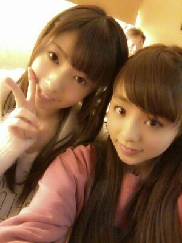
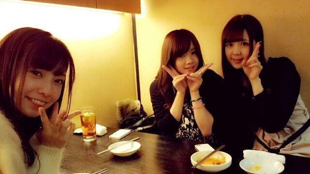
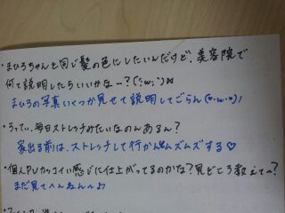
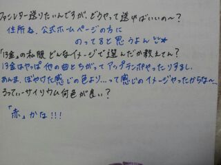

ほっほーーい♪♪)))
Rotty★です
あのさ、あのさっ !
花粉 (;゜∇゜) ・・・・
やっばいねぇ〜〜。
こりゃ困っちゃうよ (・_・)
どーするどーするー。
まひろは、まっぢでね、
花粉症なかなかのヤバ目な人なの。
だからとりあえず既に
対策しまくってるよん(・▽・) /
聞いてくれますかー???
・・・・
はいっアリガト !
目薬さして
花粉cut眼鏡付けて
お鼻シュッシュして
お鼻に花粉cut薬ぬって
仕上げに顔・髪・服に
花粉cutスプレーふりまいてる。
どや ?
なかなかぢゃろ〜ん(*з*)♪
のど飴ちゃんも
つねに持ってるよ(*^^*)
何か 花粉対策でいい方々
ある方教えてください(´・▽・)
まひろ本当に一年でこの時期が
一番辛たんなんです(*´ω`*)
NEWSでやってたよ !
ヨーグルト毎日食べると
花粉対策になるみたいだね /
後 花粉が引っ付きやすい服は
控えるでぃ。☆ ワーーー
ぴょん。
そーぃえば、
最近, 仕事終わりに
韓国料理店☆に連れてって
もらったりしたよ
その時の写真だよぉ〜(((・ω・)
ゆったんとー♪

ゆったん、りな、せいらー♪

ゆったんも せいらも りなも
めちゃ好き。
まひろーレッスンルームゥ〜♪
ぴょん。
前回、コメント
ありがとうございます(^_^)
いっきに、
書いたから字 すごく
きたなくなっちゃってるけど
ごめんねぇ(´；ω；｀)
質問返しです★/

(↑髪の毛１本どーこだ?笑)

今日も１日お疲れ様でしたん♪
おやすみなさい...( ´ω` )